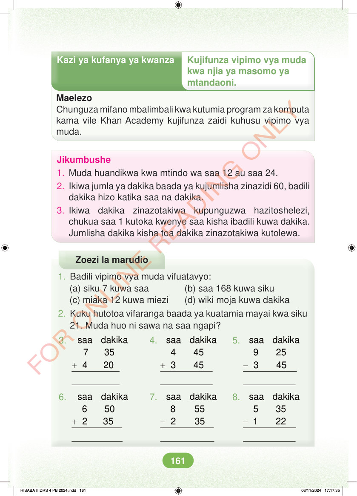

<!DOCTYPE html>
<html lang="sw-TZ"><head><meta charset="utf-8"><meta name="viewport" content="width=device-width,initial-scale=1">
<title>Hisabati: Kitabu cha Mwanafunzi Darasa la Nne</title>
<meta name="title-id" content="pg167_sec001"><meta name="page-section-id" content="175">
<link href="./content/tailwind_output.css" rel="stylesheet"><link href="./assets/libs/fontawesome/css/all.min.css" rel="stylesheet"><link href="./assets/fonts.css" rel="stylesheet">
<style>body{margin:0;background:#eef1ed}main{width:100%;display:flex;justify-content:center;padding:1rem 1rem 5rem;box-sizing:border-box}#content{width:100%;display:flex;justify-content:center}.pdf-page{position:relative;width:min(calc(100vw - 2rem),56rem);aspect-ratio:540.8980102539062/750.6610107421875;background:white;box-shadow:0 4px 24px #0002;overflow:hidden}.pdf-page img{position:absolute;inset:0;width:100%;height:100%;object-fit:fill}</style>
</head><body><main><h1 class="sr-only" id="page-heading">Ukurasa wa 167</h1><div id="content" class="opacity-0"><section role="article" data-section-type="pdf_accessible_page" data-section-id="pg167_sec001" aria-labelledby="page-heading" class="pdf-page"><p class="sr-only" data-id="pg167_gp001_tx001">Kazi ya kufanya ya kwanza Kujifunza vipimo vya muda kwa njia ya masomo ya mtandaoni. Maelezo Chunguza mifano mbalimbali kwa kutumia program za komputa kama vile Khan Academy kujifunza zaidi kuhusu vipimo vya muda. Jikumbushe 1. Muda huandikwa kwa mtindo wa saa 12 au saa 24. 2. Ikiwa jumla ya dakika baada ya kujumlisha zinazidi 60, badili dakika hizo katika saa na dakika. 3. Ikiwa dakika zinazotakiwa kupunguzwa hazitoshelezi, chukua saa 1 kutoka kwenye saa kisha ibadili kuwa dakika. Jumlisha dakika kisha toa dakika zinazotakiwa kutolewa. Zoezi la marudio 1. Badili vipimo vya muda vifuatavyo: (a) siku 7 kuwa saa (b) saa 168 kuwa siku (c) miaka 12 kuwa miezi (d) wiki moja kuwa dakika 2. Kuku hutotoa vifaranga baada ya kuatamia mayai kwa siku 21. Muda huo ni sawa na saa ngapi? 3. 4. 5. + + - saa dakika 4 45 3 45 saa dakika 7 35 4 20 saa dakika 9 25 3 45 6. 7. 8. + - - saa dakika 6 50 2 35 saa dakika 8 55 2 35 saa dakika 5 35 1 22 HISABATI DRS 4 PB 2024.indd 161 HISABATI DRS 4 PB 2024.indd 161 06/11/2024 17:17:35 06/11/2024 17:17:35</p></section></div></main><div class="relative z-50" id="interface-container"></div><div class="relative z-50" id="nav-container"></div><script src="./assets/offline-preloader.js"></script><script src="./assets/scorm.js"></script><script src="./assets/base.bundle.local.js"></script></body></html>